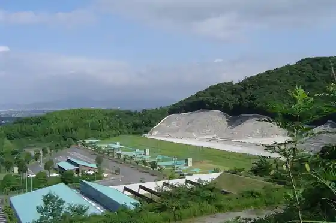
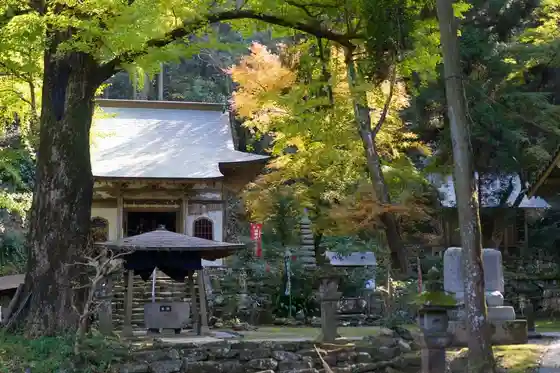
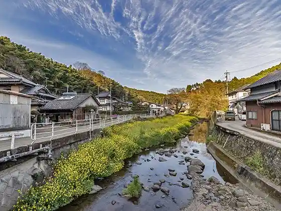
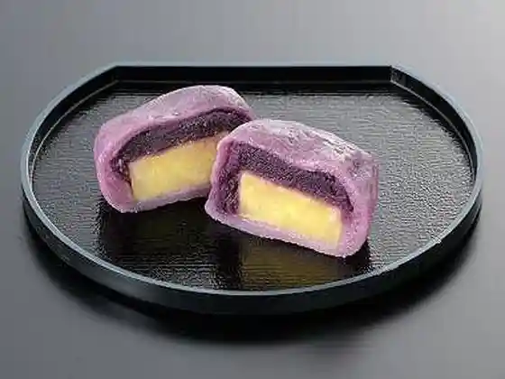

Kumamotoken Sogo Shageki Ba
Mashiki, Kumamoto · 096-288-8805 · Official / source link

Kiyama Castle Ruins Park
Mashiki, Kumamoto · 096-286-3111 · Official / source link
Iidayama Joraku Tera (Iidasanjorakuji)
Mashiki, Kumamoto · 096-284-2250 · Official / source link

Tokutomi Soho Sensei Tanjo Chi Hi
Mashiki, Kumamoto · 096-286-3307 · Official / source link

Imo Ya Chobe
Mashiki, Kumamoto · 096-273-7979 · Official / source link

walet (Waretto)
Mashiki, Kumamoto · 096-292-2225 · Official / source link
Greentea.Lab (Guriinteirabo)
Mashiki, Kumamoto · 096-286-5566 · Official / source link
Sanji Zo
Mashiki, Kumamoto · 096-289-8307 · Official / source link
Mashiki Fukko Machizukuri Center
Mashiki, Kumamoto · 096-284-1711 · Official / source link
Mashikirari
Mashiki, Kumamoto · Official / source link
Kashi Tokoro Tsutsumi Ya Kumamoto Mashiki Mise
Mashiki, Kumamoto · 096-300-0063 · Official / source link
Akai Suigen Unagi Ryori
Mashiki, Kumamoto · 096-286-1177 · Official / source link
Mashiki Shiken Fujin Memorial Museum
Mashiki, Kumamoto · 096-286-4959 · Official / source link
Musashi Honpo
Mashiki, Kumamoto · 096-289-2778 · Official / source link
Mimoza
Mashiki, Kumamoto · 096-289-2363 · Official / source link
Heike Ya Aso Kumamoto Kuko Mise (Hoan Kensa Tsukago Ryokyaku Taminarubiru 3F)
Mashiki, Kumamoto · 070-8436-9130 · Official / source link